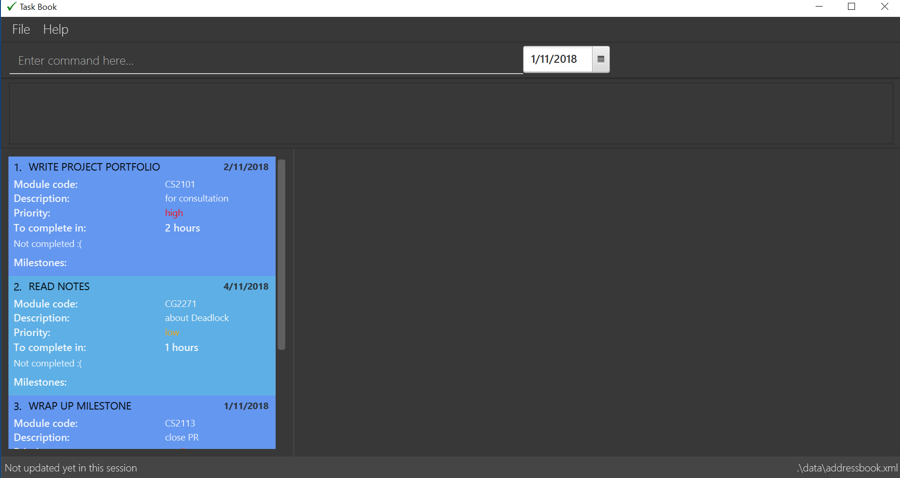

Since: Aug 2018 Licence: MIT
- 1. Introduction
- 2. Quick Start
- 3. Features
- 3.1. Viewing help :
help - 3.2. Adding a task:
add - 3.3. Adding a milestone:
add_milestone - 3.4. Complete a task:
complete - 3.5. Sort the taskbook:
sort - 3.6. Deferring a deadline:
defer - 3.7. Delete a task :
delete - 3.8. Selecting a date:
select - 3.9. Editing a task:
edit - 3.10. Tracking productivity :
track - 3.11. Listing entered commands :
history - 3.12. Undoing previous command :
undo - 3.13. Redoing the previously undone command :
redo - 3.14. Clearing all entries :
clear - 3.15. Exiting the program :
exit - 3.16. Saving the data
- 3.1. Viewing help :
- 4. FAQ
- 5. Command Summary
1. Introduction
Task Book is for students who prefer to use a desktop app for managing their daily tasks and ultimately, lead a more productive life. More importantly, AB is optimized for those who prefer to work with a Command Line Interface (CLI) while still having the benefits of a Graphical User Interface (GUI). If you can type fast, AB can get your management of tasks done faster than traditional paper notebooks or a mobile application. Interested? Jump to the Section 2, “Quick Start” to get started. Enjoy!
2. Quick Start
-
Ensure you have Java version
9or later installed in your Computer. -
Download the latest
taskbook.jarhere. -
Copy the file to the folder you want to use as the home folder for your Address Book.
-
Double-click the file to start the app. The GUI should appear in a few seconds.
 -
Type the command in the command box and press Enter to execute it.
e.g. typinghelpand pressing Enter will open the help window. -
Some example commands you can try:
-
list: lists all tasks for that day -
exit: exits the app
-
-
Refer to Section 3, “Features” for details of each command.
3. Features
Command Format
-
Words in
UPPER_CASEare the parameters to be supplied by the user e.g. inadd t/TASK,TASKis a parameter which can be used asadd t/Do homework.
3.1. Viewing help : help
Format: help
3.2. Adding a task: add
Adds a task with its module code, title, description, priority level (low, medium, high) and the number of hours (integers only) expected to complete this task, to the task book
Format: add c/MODULE_CODE t/TITLE d/DESCRIPTION p/PRIORITY h/HOURS
Examples:
-
add c/CS2113 t/Complete 2113 Tutorial d/with code done p/high h/1
3.3. Adding a milestone: add_milestone
Adds a milestone to selected task from the task book
Format: add_milestone i/INDEX m/MILESTONE r/RANK
Examples:
-
add_milestone i/1 m/Complete Sections 8.1 to 8.5 r/1
3.4. Complete a task: complete
Complete a task in the task book by providing its index and the actual number of hours taken to complete the task
Format: complete i/INDEX h/HOURS_TO_COMPLETE
Examples:
-
complete i/1 h/2
3.5. Sort the taskbook: sort
Sort the tasks in the task book via priority, deadlines, modules, or title
Format: sort s/METHOD
Examples:
-
sort s/priority
3.6. Deferring a deadline: defer
Defers a deadline for a task
Format: defer i/INDEX dd/DAY mm/MONTH yyyy/YEAR
|
A valid year must be between 2018 and 9999 (inclusive) |
Examples:
-
defer i/1 dd/04 mm/01 yyyy/2018
3.7. Delete a task : delete
Removes a task from the task book
Format: delete [INDEX]
Examples:
-
delete 1
3.8. Selecting a date: select
Chooses a particular date.
Format: select dd/DAY mm/MONTH yyyy/YEAR or
select DAY/MONTH/YEAR
|
A valid year must be between 2018 and 9999 (inclusive) |
Examples:
-
select dd/1 mm/1 yyyy/2018
3.9. Editing a task: edit
Edits one or more fields in a selected task.
Format: edit i/INDEX [t/TITLE] [d/DESCRIPTION] [c/MODULE CODE] [p/PRIORITY] [h/HOURS]
Examples:
-
edit i/1 t/Complete CS2113 tutorial -
edit i/1 d/Edit editTask to fit TaskBook h/4 -
edit i/1 t/Complete CS2271 tutorial d/Edit editTask to fit TaskBook c/CS2113 p/high h/4
3.10. Tracking productivity : track
Tracks your productivity for all completed tasks, by returning an average productivity (in percentage).
Format: track
3.11. Listing entered commands : history
Lists all the commands that you have entered in reverse chronological order.
Format: history
|
Pressing the ↑ and ↓ arrows will display the previous and next input respectively in the command box. |
3.12. Undoing previous command : undo
Restores the address book to the state before the previous undoable command was executed.
Format: undo
|
Undoable commands: those commands that modify the address book’s content ( |
Examples:
-
delete 1
list
undo(reverses thedelete 1command) -
track
list
undo
Theundocommand fails as there are no undoable commands executed previously. -
delete 1
clear
undo(reverses theclearcommand)
undo(reverses thedelete 1command)
3.13. Redoing the previously undone command : redo
Reverses the most recent undo command.
Format: redo
Examples:
-
delete 1
undo(reverses thedelete 1command)
redo(reapplies thedelete 1command) -
delete 1
redo
Theredocommand fails as there are noundocommands executed previously. -
delete 1
clear
undo(reverses theclearcommand)
undo(reverses thedelete 1command)
redo(reapplies thedelete 1command)
redo(reapplies theclearcommand)
3.14. Clearing all entries : clear
Clears all entries from the address book.
Format: clear
3.15. Exiting the program : exit
Exits the program.
Format: exit
3.16. Saving the data
Address book data are saved in the hard disk automatically after any command that changes the data.
There is no need to save manually.
4. FAQ
Q: How do I transfer my data to another Computer?
A: Install the app in the other computer and overwrite the empty data file it creates with the file that contains the data of your previous Address Book folder.
5. Command Summary
-
Add task :
add c/MODULE_CODE t/ACTION d/DESCRIPTION p/PRIORITY_LEVEL h/HOURS_TO_COMPLETE
e.g.add c/CS2113 t/Complete 2113 Tutorial d/with code done p/high h/2 -
Add milestone :
add_milestone t/TASK_TITLE m/MILESTONE r/RANK…
e.g.add_milestone t/Complete CS2113 W8 LO m/Complete Sections 8.1 to 8.5 r/1 -
Clear :
clear -
Complete :
complete i/INDEX h/HOURS_COMPLETED
e.g.complete i/1 h/2 -
Defer deadline :
defer i/INDEX dd/DAY mm/MONTH yyyy/YEAR
e.g.defer i/1 dd/01 mm/01 yyyy/2018 -
Delete :
delete INDEXe.g.delete 1 -
Edit : 'edit edit i/INDEX [t/TITLE] [d/DESCRIPTION] [c/MODULE CODE] [p/PRIORITY] [h/HOURS]`
e.g.edit i/1 t/Complete CS2271 tutorial d/Edit editTask to fit TaskBook c/CS2113 p/high h/4 -
List :
list -
Help :
help -
History :
history -
Select :
select dd/DAY mm/MONTH yyyy/YEARorselect DAY/MONTH/YEAR
e.g.select dd/1 mm/1 yyyy/2018 -
Sort :
sort s/METHODe.g.sort s/priority -
Track :
track -
Undo :
undo -
Redo :
redo